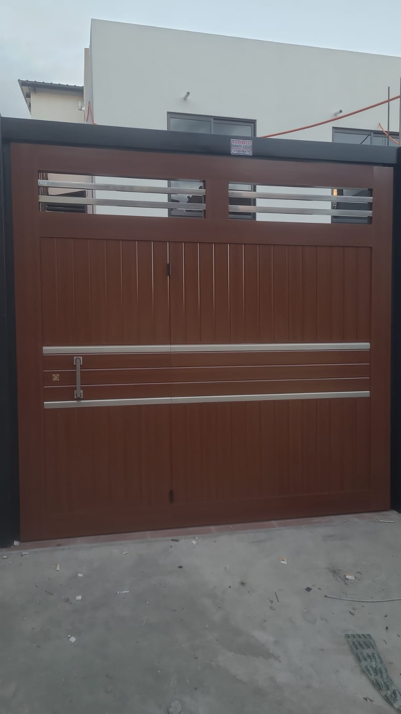
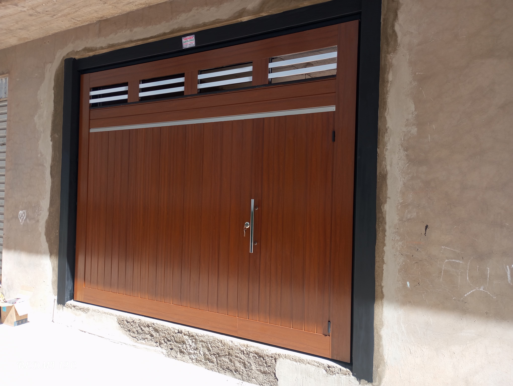
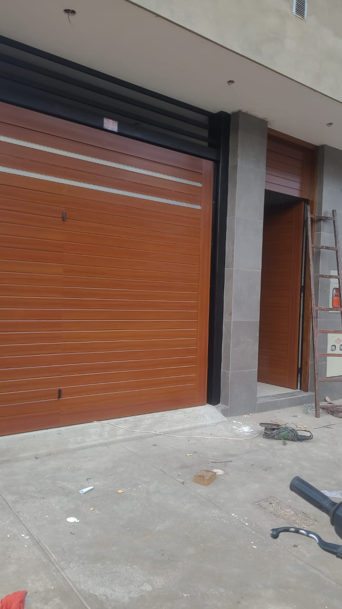
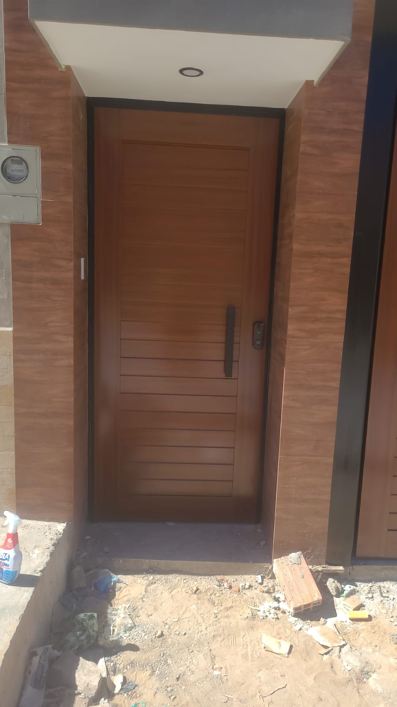
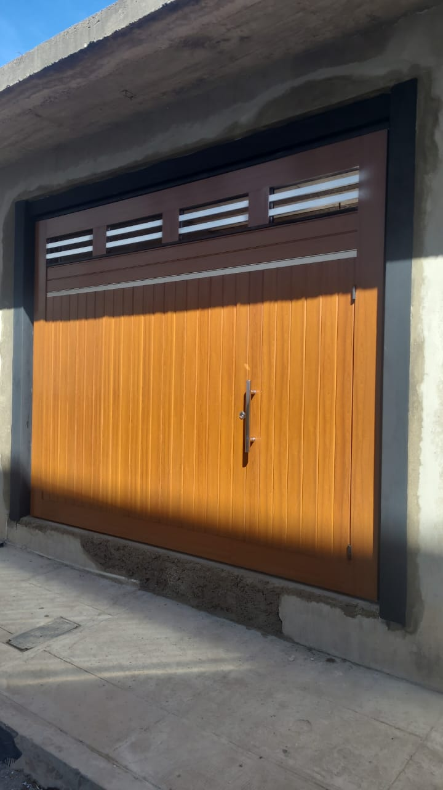

GALERÍA DE FOTOS
Explora nuestra selección de proyectos y trabajos realizados en portones automáticos.







Explora nuestra selección de proyectos y trabajos realizados en portones automáticos.




